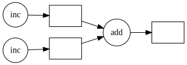
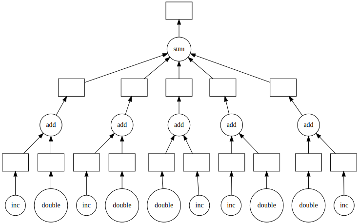

Dask delayed
“Slidified” from the original dask documentation
Paul-Valéry Montpellier 3 University
Dask Delayed
Sometimes problems don't fit into one of the collections like dask.array or dask.dataframe. In these cases, users can parallelize custom algorithms using the simpler dask.delayed interface. This allows you to create graphs directly with a light annotation of normal python code:
Dask Delayed
A Dask Delayed task graph with two "inc" functions combined using an "add" function resulting in an output node.
Example
Visit https://examples.dask.org/delayed.html to see and run examples using Dask Delayed.
Sometimes we face problems that are parallelizable, but don't fit into high-level abstractions like Dask Array or Dask DataFrame. Consider the following example:
Example
There is clearly parallelism in this problem (many of the inc, double, and add functions can be evaluated independently), but it's not clear how to convert this to an array or DataFrame computation. As written, this code runs sequentially in a single thread. However, we see that a lot of this could be executed in parallel.
The Dask delayed function decorates your functions so that they operate lazily. Rather than executing your function immediately, it will defer execution, placing the function and its arguments into a task graph.
dask.delayed
delayed
Example
We slightly modify our code by wrapping functions in delayed. This delays the execution of the function and generates a Dask graph instead:
Example
We used the dask.delayed function to wrap the function calls that we want to turn into tasks. None of the inc, double, add, or sum calls have happened yet. Instead, the object total is a Delayed result that contains a task graph of the entire computation. Looking at the graph we see clear opportunities for parallel execution. The Dask schedulers <scheduling> will exploit this parallelism, generally improving performance (although not in this example, because these functions are already very small and fast.)
Example
A task graph with many nodes for "inc" and "double" that combine with "add" nodes. The output of the "add" nodes finally aggregate with a "sum" node.
Example
We can now compute this lazy result to execute the graph in parallel:
Decorator
It is also common to see the delayed function used as a decorator. Here is a reproduction of our original problem as a parallel code:
Real time
Sometimes you want to create and destroy work during execution, launch tasks from other tasks, etc. For this, see the Futures <futures> interface.
Best Practices
For a list of common problems and recommendations see Delayed Best Practices <delayed-best-practices>.
Indirect Dependencies
Sometimes you might find yourself wanting to add a dependency to a task that does not take the result of that dependency as an input. For example when a task depends on the side-effect of another task. In these cases you can use dask.graph_manipulation.bind.
import dask
from dask.graph_manipulation import bind
DATA = []
@dask.delayed
def inc(x):
return x + 1
@dask.delayed
def add_data(x):
DATA.append(x)
@dask.delayed
def sum_data(x):
return sum(DATA) + x
a = inc(1)
b = add_data(a)
c = inc(3)
d = add_data(c)
e = inc(5)
f = bind(sum_data, [b, d])(e)
f.compute()sum_data will operate on DATA only after both the expected items have been appended to it. bind can also be used along with direct dependencies passed through the function arguments.
Best Practices
It is easy to get started with Dask delayed, but using it well does require some experience. This page contains suggestions for best practices, and includes solutions to common problems.
Call delayed on the function, not the result
Dask delayed operates on functions like dask.delayed(f)(x, y), not on their results like dask.delayed(f(x, y)). When you do the latter, Python first calculates f(x, y) before Dask has a chance to step in.
| Don't | Do |
Compute on lots of computation at once
To improve parallelism, you want to include lots of computation in each compute call. Ideally, you want to make many dask.delayed calls to define your computation and then call dask.compute only at the end. It is ok to call dask.compute in the middle of your computation as well, but everything will stop there as Dask computes those results before moving forward with your code.
| Don't | Do |
Calling y.compute() within the loop would await the result of the computation every time, and so inhibit parallelism.
Don't mutate inputs
Your functions should not change the inputs directly.
| Don't | Do |
If you need to use a mutable operation, then make a copy within your function first:
Avoid global state
Ideally, your operations shouldn't rely on global state. Using global state might work if you only use threads, but when you move to multiprocessing or distributed computing then you will likely encounter confusing errors.
| Don't |
Don't rely on side effects
Delayed functions only do something if they are computed. You will always need to pass the output to something that eventually calls compute.
| Don't | Do |
In the first case here, nothing happens, because compute() is never called.
Break up computations into many pieces
Every dask.delayed function call is a single operation from Dask's perspective. You achieve parallelism by having many delayed calls, not by using only a single one: Dask will not look inside a function decorated with @dask.delayed and parallelize that code internally. To accomplish that, it needs your help to find good places to break up a computation.
The first version only has one delayed task, and so cannot parallelize.
Avoid too many tasks
Every delayed task has an overhead of a few hundred microseconds. Usually this is ok, but it can become a problem if you apply dask.delayed too finely. In this case, it's often best to break up your many tasks into batches or use one of the Dask collections to help you.
| Don't | Do |
Avoid too many tasks
Here we use dask.bag to automatically batch applying our function. We could also have constructed our own batching as follows
def batch(seq):
sub_results = []
for x in seq:
sub_results.append(f(x))
return sub_results
batches = []
for i in range(0, 10000000, 10000):
result_batch = dask.delayed(batch)(range(i, i + 10000))
batches.append(result_batch)Here we construct batches where each delayed function call computes for many data points from the original input.
Avoid calling delayed within delayed functions
Often, if you are new to using Dask delayed, you place dask.delayed calls everywhere and hope for the best. While this may actually work, it's usually slow and results in hard-to-understand solutions.
Usually you never call dask.delayed within dask.delayed functions.
| Don't | Do |
Because the normal function only does delayed work it is very fast and so there is no reason to delay it.
Don't call dask.delayed on other Dask collections
When you place a Dask array or Dask DataFrame into a delayed call, that function will receive the NumPy or Pandas equivalent. Beware that if your array is large, then this might crash your workers.
Instead, it's more common to use methods like da.map_blocks
| Don't | Do |
Don't call dask.delayed on other Dask collections
Alternatively, if the procedure doesn't fit into a mapping, you can always turn your arrays or dataframes into many delayed objects, for example
However, if you don't mind turning your Dask array/DataFrame into a single chunk, then this is ok.
Avoid repeatedly putting large inputs into delayed calls
Every time you pass a concrete result (anything that isn't delayed) Dask will hash it by default to give it a name. This is fairly fast (around 500 MB/s) but can be slow if you do it over and over again. Instead, it is better to delay your data as well.
This is especially important when using a distributed cluster to avoid sending your data separately for each function call.
| Don't | Do |
Every call to dask.delayed(train)(x, ...) has to hash the NumPy array x, which slows things down.
Working with Collections
Often we want to do a bit of custom work with dask.delayed (for example, for complex data ingest), then leverage the algorithms in dask.array or dask.dataframe, and then switch back to custom work. To this end, all collections support from_delayed functions and to_delayed methods.
Working with Collections
As an example, consider the case where we store tabular data in a custom format not known by Dask DataFrame. This format is naturally broken apart into pieces and we have a function that reads one piece into a Pandas DataFrame. We use dask.delayed to lazily read these files into Pandas DataFrames, use dd.from_delayed to wrap these pieces up into a single Dask DataFrame, use the complex algorithms within the DataFrame (groupby, join, etc.), and then switch back to dask.delayed to save our results back to the custom format:
Working with Collections
import dask.dataframe as dd
from dask.delayed import delayed
from my_custom_library import load, save
filenames = ...
dfs = [delayed(load)(fn) for fn in filenames]
df = dd.from_delayed(dfs)
df = ... # do work with dask.dataframe
dfs = df.to_delayed()
writes = [delayed(save)(df, fn) for df, fn in zip(dfs, filenames)]
dd.compute(*writes)Working with Collections
Data science is often complex, and dask.delayed provides a release valve for users to manage this complexity on their own, and solve the last mile problem for custom formats and complex situations.

Dask delayedAdvanced Programming and Parallel Computing, Master 2 MIASHS